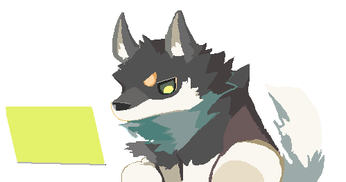
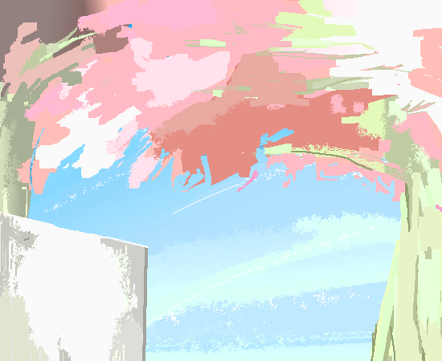

・WEB(コーディング)
・アプリ/ゲーム開発(Unity/C#)、
・デザイン、イラスト、アニメーション制作
を行なっています。
WEBやアプリとドット絵を融合させたデザインを目指しています。
2023年 東京電機大学 工学部 電気電子工学科 卒業。
同年、ぐんぎんシステムサービスにSEとして入社。
金融の基幹システムや同グループのHP開発業務に従事しました。
退職後、個人事業として開業届を提出。
学生時代から開発していたスマートフォン、
PCアプリの開発やMacOSへの対応、
広報のためのWEB制作(コーディング)を行っております。
WEBサイトのためのデザインやイラスト素材も提供しています。
HTML/CSS/C#/Unity
